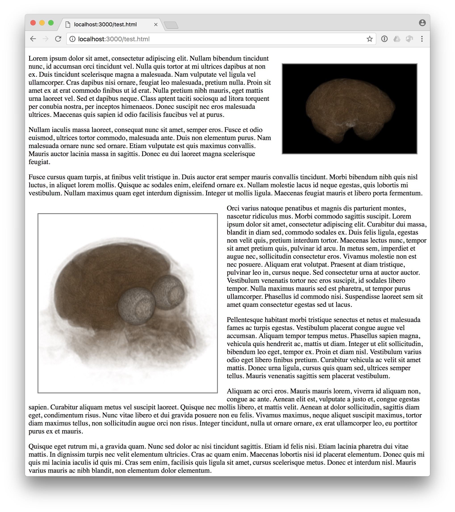

ITK/VTK Image Viewer can be used within an existing web site as a library to embed interactive 3D visualization using remote datasets.
<div class ="itk-vtk-image-viewer" />
Moreover, the JavaScript library should also be added to the web page. Only one of the following is required
<script type ="text/javascript" src ="https://kitware.github.io/itk-vtk-image-viewer/app/itkVtkImageViewer.js" >
or
<script type ="text/javascript" src ="https://unpkg.com/itk-vtk-image-viewer/dist/itkVtkImageViewer.js" >
Viewer configuration The container <div/> can be extended with the following set of attributes:
(Mandatory) data-url =”/data/005_36months_T2_RegT1_Reg2Atlas_ManualBrainMask_Stripped.nrrd”
(Optinal) data-viewport =”300x200” | default is 500x500
(Optinal) data-background-color =”00aa00” | default is black
(Optinal) data-slice =”true”

<!DOCTYPE html>
<html >
<head >
<meta http-equiv ="Content-type" content ="text/html; charset=utf-8" />
<meta name ="viewport" content ="width=device-width, initial-scale=1" >
</head >
<body >
[...]
<div
style ="float: right; display: inline-block; border: 2px solid gray; margin: 20px;"
class ="itk-vtk-image-viewer"
data-url ="/data/005_36months_T2_RegT1_Reg2Atlas_ManualBrainMask_Stripped.nrrd"
data-viewport ="300x200"
></div >
[...]
<div
style ="float: left; display: inline-block; border: 2px solid gray; margin: 20px;"
class ="itk-vtk-image-viewer"
data-url ="/data/005_20months_T2_Reg2Atlas.nrrd"
data-viewport ="400x400"
data-background-color ="ffffff"
></div >
[...]
<script type ="text/javascript" src ="itkVtkImageViewer.js" >
</script >
</body >
</html >